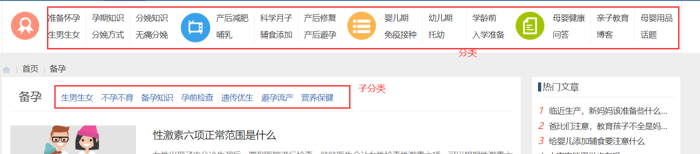
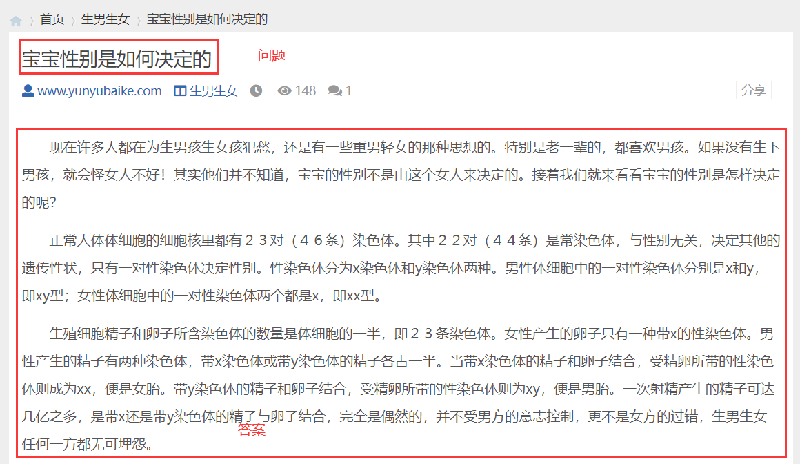
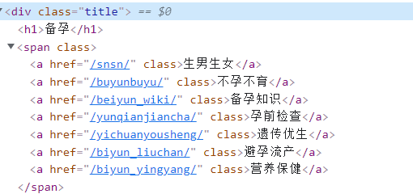
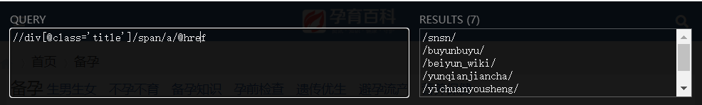
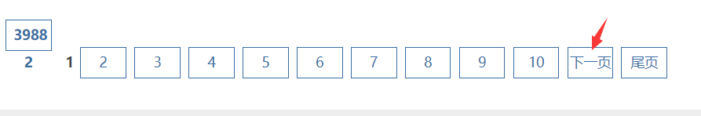
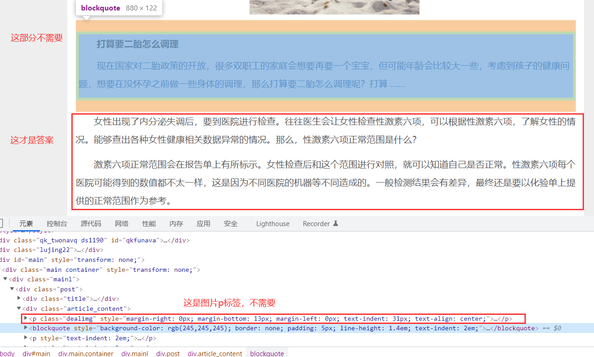

前言
这是在公司实习时，领导给出的一个数据爬取需求。（所以涉及法律问题请找公司的麻烦，不要联系我😂）
虽然我之前也干过网络爬虫，但都是在比较完整的框架下进行实现：以前只需要实现URL解析和网页源码抽取接口，其他像网络爬虫配置，数据存储，数据抽取，数据导出，任务启动和停止等模块只需要鼠标click一下或者根本就是“黑盒”的，不需要我操心。。
这一次，我基本是从“0”开始。所以在完成任务的过程中学到了很多。（当然也还不够多）
由于爬取的网站是一个经典的“列表-详情”结构，且爬取难度不难（网站没有设置反爬），作为爬虫初学者很合适，所以我把该任务的实现过程记录下来，方便自己学习。
本篇博客将记录我在实现该任务时，学到的知识、遇到的困难、对应的解决方案。
通过阅读本篇博客你将获得
- 使用Scrapy进行简单的网页数据爬取
- 使用BeautifulSoup解析HTML
- 使用Pandas做简单的数据读取、去重、分析操作
不能获得：
- Scrapy高级使用、框架结构、底层原理
- 破解数据采集时遇到的反爬
废话比较多。先来看一下阅读本文需要的前置知识。
阅读本文需要的前置知识
阅读本篇博客需要一定的前置知识。我将列举一些，可能不全。
- 网络爬虫：什么是网络爬虫
- //Conda：什么是Conda，Conda安装、环境创建等
- Python 基础：基础数据结构及操作、文件I/O操作
- PyCharm使用：如何配置开发环境，连接远程环境进行开发等
- //Linux 服务器基本命令
- HTML基础、CSS选择器等前端基础知识。
- XPath数据定位、正则表达式匹配等知识。
如果你有以上基础，那么阅读本篇博客基本没有障碍。
下面介绍我的工作环境。
工作环境
| 软件名称 | 备注 | 版本 |
|---|---|---|
| Windows | 操作系统 | 10 |
| PyCharm | 开发IDE | 2019.3.5 |
| Ananconda | Python环境管理和包管理工具 | 懒得写了 |
| Scrapy | Python开源模块，爬虫框架 | 懒得写了 |
| BeautifulSoup | Python开源模块，解析HTML | 懒得写了 |
| Pandas | Python开源模块，这里用它做简单的数据提取 | 懒得写了 |
下面介绍具体需求。
需求
爬取网站 孕育百科 各分类下的孕育问答。结果以CSV格式给出。
流程
打开 孕育百科 可以看到有很多孕育百科的分类，选择一个分类，比如，这里我们选择【准备怀孕】。
新打开的网页为https://www.yunyubaike.com/beiyun/
可以看到这里有一些子分类：

这些分类和子分类下有很多孕育百科问答，我们点击一个问题的超链接，在弹出的详情页中给出问题的答案，如图：

把这些问题和答案“抽取”到到CSV文件中，作为最终结果。
分析
首先我们需要分析该网站，例如网站数据量大小，网站网页结构，网站跳转方式，数据传输方式，数据是否加密，网站反爬严不严重等等。
可以抓包、写网页下载代码测试一下。
据此指定网站采集策略，是使用本地IP就可以采集还是需要设置一批代理IP，数据文件是存放到本地还是需要存放到Hadoop，是否需要可视化（Selenium）采集等等。
采集策略
- 先采集分类（首页）URL；
- 根据分类（首页）URL不断循环生成分页（列表页）；
- 爬取每个列表页中的详情URL；
- 下载详情URL的HTML文件，保存到本地；
- 解析本地HTML，生成CSV文件。
实现
采集分类
仔细分析网站可以发现，在采集分类存在两个坑。
- 不是所有分类都是孕育百科：对于不是分类的URL可以直接丢弃。
- 子分类下和分类存在重复：去重。
由于子分类和分类不是很多，这里使用的手工采集。
虽说手工采集，但还是需要一点小小的技巧。这里不是挨个复制网页源码中的分类连接，而是通过Chrome的一个插件XPath Helper。
该插件支持通过写XPath的方式批量获得信息。
例如我们要获取上图【分类和子分类】中的子分类。先查看这部分的网页源码

打开XPath Helper，写入XPath获得结果。

最终获得大小分类共72个。
列表页翻页采集详情页URL
每个分类下有很多翻页，通过不断的翻页采集所有的详情URL。

这里我一开始偷懒，用的“八爪鱼采集器”。后来发现这软件虽然不需要写代码，但是对于大于1W的数据需要收费，就放弃了。
后续我基于Scrapy爬虫框架完成采集。
新建Scrapy项目
首先我们需要新建一个Scrapy项目（前提是已经安装了Scrapy）
scrapy startproject yybkSpider |
其中， yybkSpider为项目名称，可以看到将会创建一个yybkSpider文件夹，目录结构大致如下：
下面来简单介绍一下各个主要文件的作用：
yybkSpider/ |
这里介绍我认为比较重要的文件：
- settings.py: 项目的配置文件，默认下载的网页是Unicode，需要在这里配置为UTF-8编码。
- yybkSpider/: 项目的Python模块，将会从这里引用代码。
- yybkSpider/items.py: 保存数据的实体，有点像Java Bean。
- yybkSpider/yybkSpider/: 存储爬虫代码目录。
修改配置
这里默认下载的网页为UTF-8，所以需要在settings.py中增加配置FEED_EXPORT_ENCODING = 'utf-8'
还可以修改下载的线程数。但是我查阅了网上的相关资料，好像作用并不大。由于对Python和Scrapy不是很了解，这里直接给出连接：
制作爬虫
紧接着，制作一个爬虫：
- Input：所有分类首页
- Output：
- 所有列表页
- 每个列表页的详情URL和其他信息。
进入yybkSpider/目录下，输入命令创建爬虫：
scrapy genspider yybk_list "yunyubaike.com" |
yybk_list是爬虫的名称"yunyubaike.com"指出该爬虫爬取的域名，超出域名的不会爬取。
之后可以看到在yybkSpider/yybkSpider/生成了一个文件yybk_list.py，它默认增加了下列代码：
import scrapy |
name = “” ：这个爬虫的识别名称，必须是唯一的，在不同的爬虫必须定义不同的名字。
allow_domains = [] 是搜索的域名范围，也就是爬虫的约束区域，规定爬虫只爬取这个域名下的网页，不存在的URL会被忽略。
start_urls = [] ：爬取的URL列表。爬虫从这里开始抓取数据，所以，第一次下载的数据将会从这些urls开始。其他子URL将会从这些起始URL中继承性生成。
parse(self, response) ：解析的方法，每个初始URL完成下载后将被调用，调用的时候传入从每一个URL传回的Response对象来作为唯一参数，主要作用如下：
- 负责解析返回的网页数据(response.body)，提取结构化数据(生成item)
- 生成需要下一页的URL请求。
接下来我们完成该爬虫。首先start_urls不是一个而是72个分类首页URL。再者我们要在parse方法中完成两件事：
- 不断生成下一页
- 对于每个列表页解析其中的数据。
下面是完整代码，这部分参考了官方文档：https://docs.scrapy.org/en/latest/intro/overview.html。
这里有几个地方值得注意：
- 通过
response.url获得当前采集的URL response.xpath('')返回的是一组元素- 我把
response.xpath('')[0].get()都改写了，原因是如果response.xpath('')为空在执行[0]操作就会报错，导致爬取失败 - 使用
get()而不是exract()。原因如下：
get() 、getall() 是新版本的方法，extract() 、extract_first()是旧版本的方法。
前者更好用，取不到就返回None，后者取不到就raise一个错误。
- 想要在当前元素下继续通过XPath选取元素，需要在XPath开头加一个
. - 注意
yield的使用 - 这里采集了很多“多余”的字段，例如页码，总数，当前url。这是为了后续验证采集的数据是否完整正确而增加的冗余字段。
import scrapy |
启动爬虫
最后启动爬虫，保存数据。在项目根目录下运行
scrapy crawl yybk_list -o urls.json |
可以发现，在项目根目录多出了urls.json文件，里面是我们保存的所有列表数据。
我们也可以保存为其他格式。这里不再赘述。
这样我们就得到了大约27W的详情连接。下面我们把这些连接对应的HTML保存到本地。
下载详情网页源码
制作爬虫
进入yybkSpider/目录下，输入命令创建爬虫：
scrapy genspider yybk_detail_down "yunyubaike.com" |
和上面类似，在yybkSpider/yybkSpider/yybk_detail_down.py写入代码：
这里需要注意：
- start_urls是需要从文件中读取的
- 为了读数据、取数据方便，我使用了pands
- 获得网页源码，使用
response.text - 这里没有对网页源码直接解析，而是先保存，再在后续解析。提高容错。
import scrapy |
此外，我担心detail_url格式是否一致，所以在Python Shell中执行了如下代码：
import pandas as pd |
执行结果为空，这证明detail_url格式一致。
启动爬虫
紧接着启动爬虫，和上面类似：
scrapy crawl yybk_detail_down |
由于这里不需要生成文件，所以没有-o
等待代码执行完毕后，可以发现在项目根目录产生了一个html/文件夹，下面保存了所有详情页的网页源码。
解析详情页
分析
打开一个详情页：

可以定位到：在<div class='article_content' />标签下，所有的带文字的p标签是我们需要的。每个p标签是一个段落，在保存的时候，段落信息是不能丢失的。也就是说换行符是需要的。
代码
这一步是脱离于Scrapy框架的。
自定义一个Python脚本：
import os |
在parse方法中需要注意以下几点：
soup.select("div.article_content > p")这里使用了CSS选择器，制定了div下的直接子标签；p.get_text()获得p标签下的所有文字；- 为了避免CSV解析失败，这里把英文逗号换成中文逗号，把英文的引号全部去掉。（CSV文件用英文逗号做字段分割；当我们需要把多行数据保存在一个字段中时，需要把多行数据用英文引号包起来）；
- 使用BeautifulSoup解析HTML。
在main方法中需要注意：
- 27W行保存到一个CSV文件中，我担心不好把控，所以我将27W行数据每5W行保存为一个CSV
- 当需要对除法结果四舍五入时，这样做比较简单：
(被除数+除数-1)/除数
运行脚本
python xxx.py |
最终导出6个CSV文件。任务完成。
源码下载
https://github.com/guoyujian/blog-resource/tree/main/yybkSpider
此外…
Scrapy Shell快速测试
在使用Scrapy的过程中，我想先传入一条URL测试返回的resonpse。经过查阅使用如下命令：
scrapy shell <url> |
执行后，进入Python Console，内置的response对象即是\
在服务器运行
如果在本机执行爬虫代码，会占用较多的资源，也不方便。此时可以把爬虫代码同步到服务器运行。我使用PyChram连接远程服务器，在本机编写爬虫代码，然后同步到服务器中执行。（具体请自行百度）